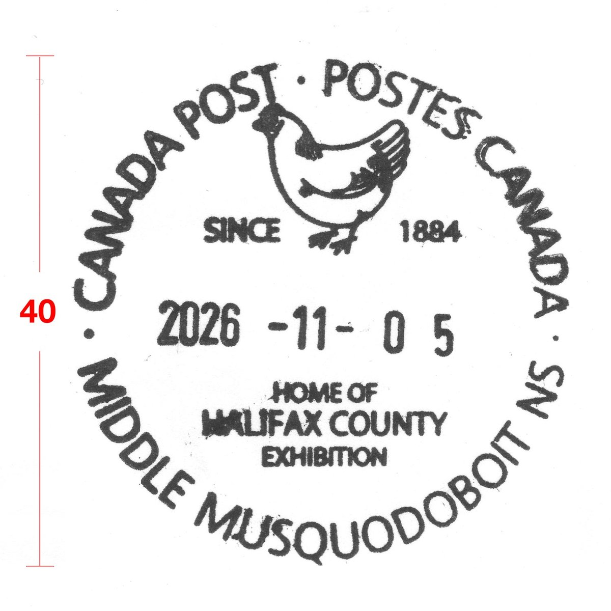

Middle Musquodoboit PO pictorial cancel
Since 1884 – Home of Halifax County Exhibition
- Status
- Active
- Run dates
- 2020-01-01 to 2031-12-31
- Design
- "SINCE 1884 / HOME OF HALIFAX COUNTY EXHIBITION"; chicken
- Ink colour
- Black
- Designer
- Unknown
- Post office
- Middle Musquodoboit PO
12336 Hwy 224
Middle Musquodoboit, NS
B0N 1X0 - Subjects
- chicken, animal, bird, domestic animal
Collect it by mail. Send your stamped covers, with a stamped return envelope, to the post office address above. How to collect pictorial cancels by mail · en français
 Shubenacadie POThe Milk Can Capital of Canada / La capitale canadienne du bidon de lait
Shubenacadie POThe Milk Can Capital of Canada / La capitale canadienne du bidon de lait Maitland POHOME OF THE TIDAL BORE
Maitland POHOME OF THE TIDAL BORE Noel POPink
Noel POPink Noel POGreen
Noel POGreen Halifax STN CentralHaunted Canada
Halifax STN CentralHaunted Canada Halifax STN CentralExplosion 1917
Halifax STN CentralExplosion 1917